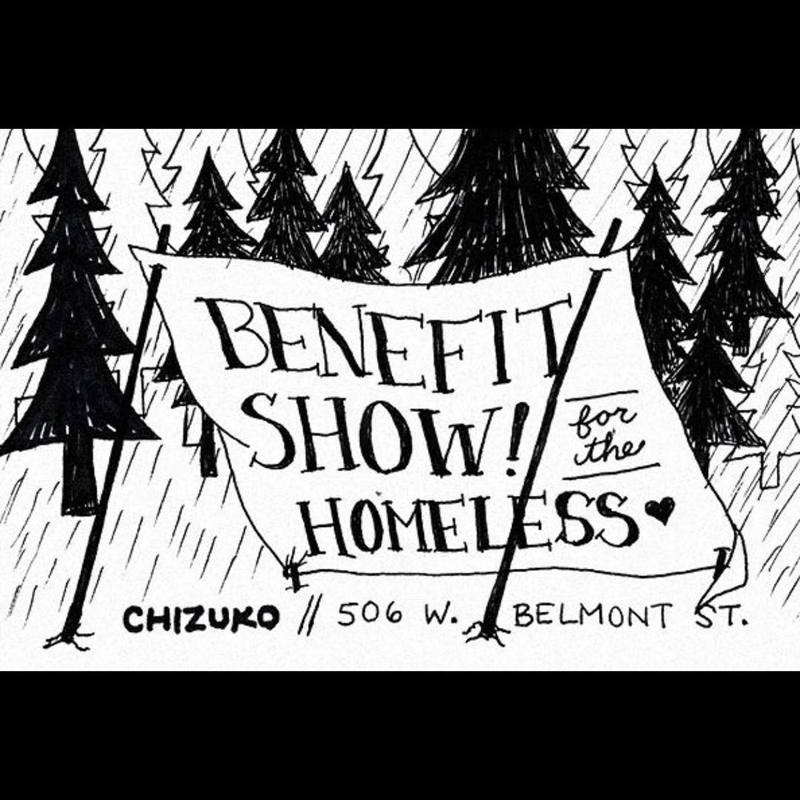

SAT MAY 6from the archive
Sour, Cookies & Cake, Roswell, Dark Star Coven, Amanda Martins
★ benefit show
9pm
$5 donation + non-perishable food item
Show to benefit Pensacola's homeless community happening tonight at 9 ft. Sour, Cookies and Cake, Roswell, Dark Star Coven and Amanda Martins. Cover is a $5 donation and a non perishable food item. Hope to see you all there!